What is network management ?
Configuration and keeping network devices and connections up and active.
Ping is used to check, if the host is reachable.To be more precise,test the connectivity between two nodes.Ping uses ICMP (Internet Control Message Protocol) to communicate to other devices.
Ping hostname
Ping by default waits for 1 second before sending the next packet
ping google.com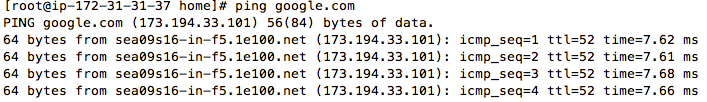
ping -i 3 hostname
Increase the Wait time for 3 seconds before sending the next packet.
ping -i 3 google.com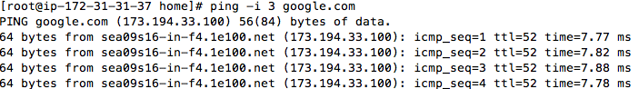
Ping -c 5 hostname
Exit the ping command automatially after certain second.
ping google.com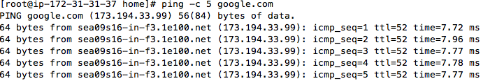
ping -a hostname
Sends you a audible beep sound when host is reachable so
ping -a google.com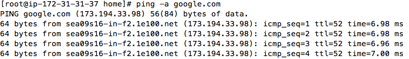
Command that displays network connections for the TCP and UDP (incoming as well as outgoing connection), routing tables, and a number of network interface and network protocol statistic
TCP : Transmission control protocol,it is a connection oriented protocol. it follows order while sending the messages and is more secure
UDP: User Data gram Protocol, is a connection less protocol. it doesnt follow the order, and is less secure. it is fast comparission to tcp
netstat -a or netstat -all
Displays all the connections(TCP and UDP)
netstat -a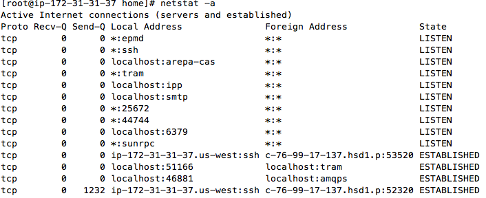
netstat -tcp or netstat -at
Displays all the tcp connection only
netstat -u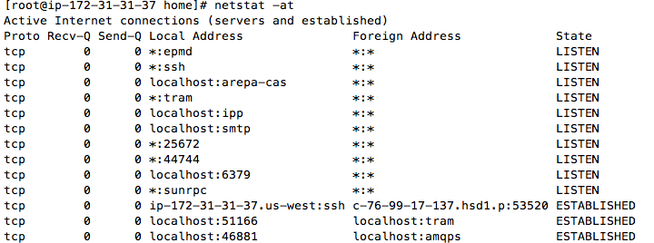
netstat --udp or netstat -au
Displays all the udp connection.
netstat -u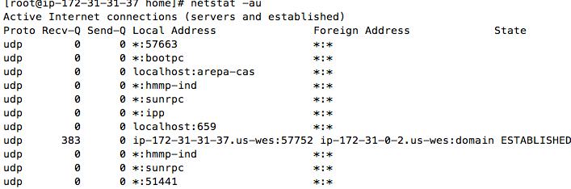
netstat -l
Displays only listing ports.-lt will display only listing tcp ports, and -lu displays only listing udp ports
netstat -l
netstat -lt
netstat -lu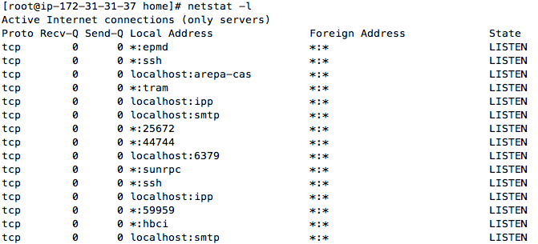
Find out which process is taking particular port and vice versa
netstat -anp | grep ssh netstat -anp | grep ':80'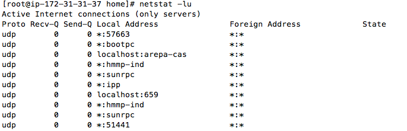
It is used to manage, configure and query network interfaces.
ifconfig -a
It is used to display all the network interfaces.
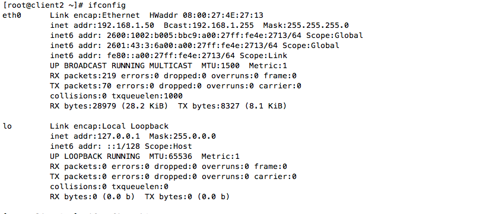ifconfig eth0
Display the details of specific network interface
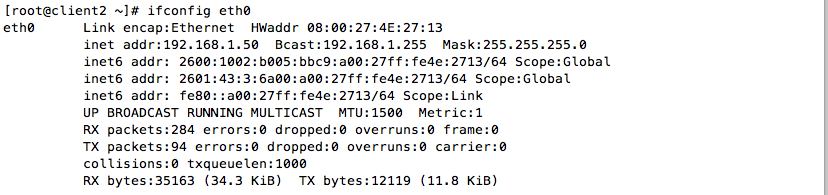ifconfig eth0 up or down
Enable or disable the network interfaces.
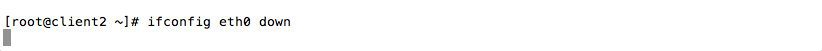ifconfig eth0 ipaddress
Assigning the ipaddress to the network interface, similary can assign the netmask and broadcast to network interface.
$ ifconfig eth0 192.168.1.89 Got changed from 50 to 89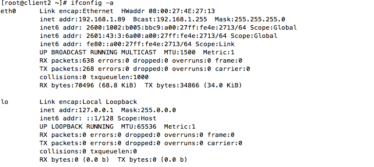
Telnet is a network protocol which is used to communicate with remote host and to test if port is listening on a system
telnet ipaddress or hostname
it is used to connect to the remote host from your node.Mainly used to test the conneciton between two host.By default telent tries to connect on port 23
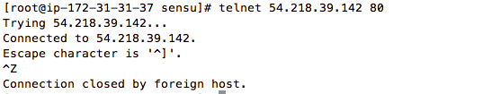telnet ipaddress port
It is used to check if the particular port is open in the host for communication.
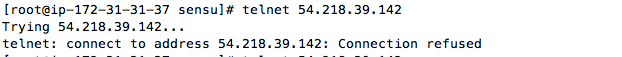Traceroute tracks the route packets taken from an IP network on their way to a given host
traceroute ipaddress/servername
Finds the path from my machine the google.com
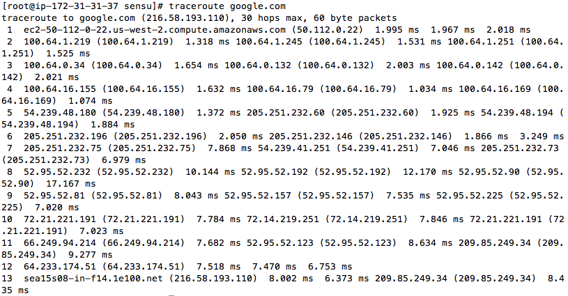traceroute google.com -w .1
Configure Response Wait Time. Wait here is 0.1 second
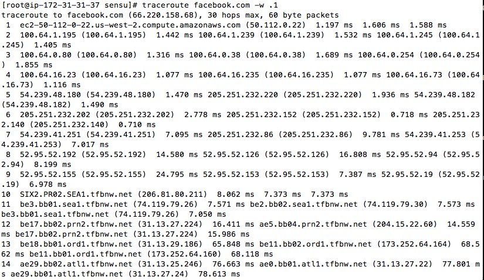Name server lookup is used to find out the named domain
nslookup hostname
Gives the address of the system's Domain Name Server
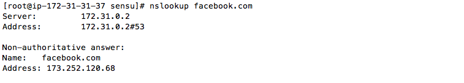nslookup ipaddress
Reverse DNS Lookups.
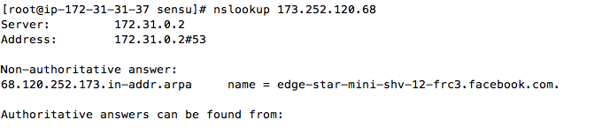Its the name of the machine.
hostname
Will give the name of the server
[root@sensu]# hostname sensumachine
hostname newname
Changes the hostname to the new name.
[root@sensu]# hostname newhostnme [root@sensu]# hostname newhostnme [root@ip-172-31-31-37 sensu]#
Change the hostname permanently
vi /etc/networks
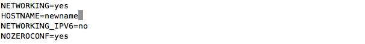it is used to perform dns lookup, ipaddress and viceversa, validate ns , mx names and a records
host hostname
Provides ipaddress information
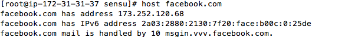host ipaddress
Provides hostname information
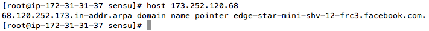